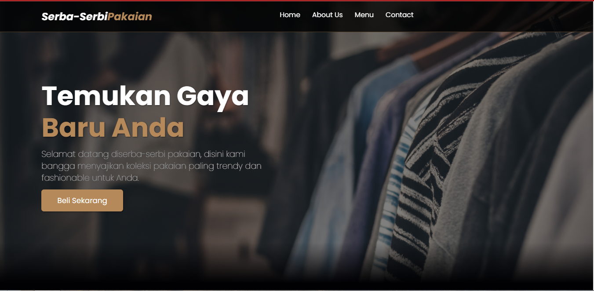
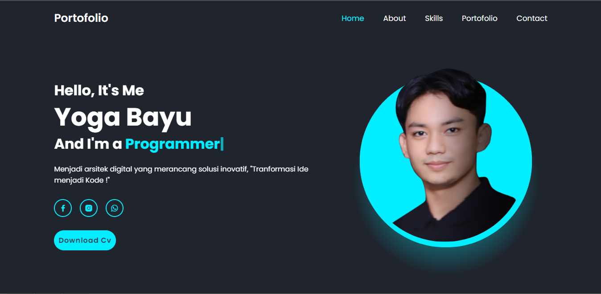
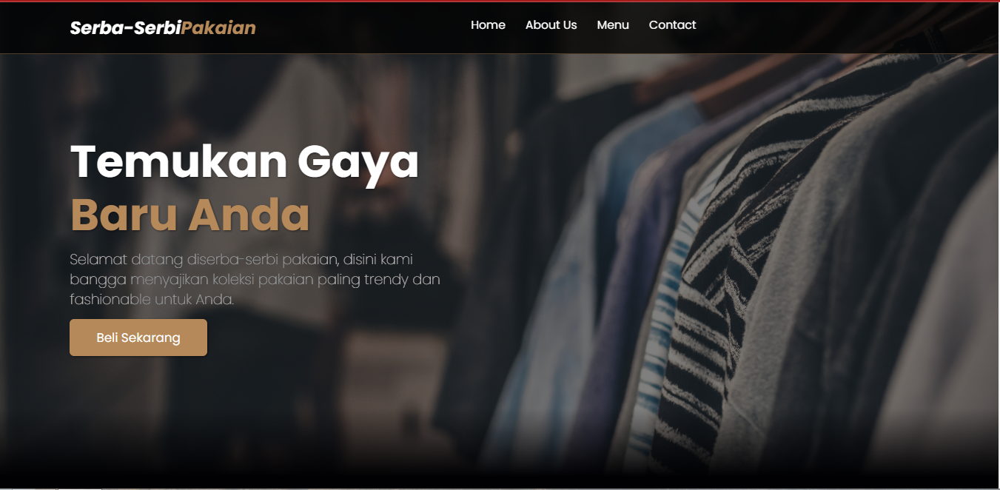
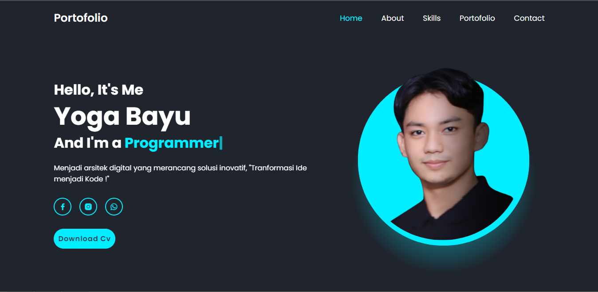

Frontend Developer
Saya seorang mahasiswa IT, yang dimana saya memiliki keinginan untuk menjadi seorang frontend developer. saya juga memiliki semangat dalam menciptakan pengalaman pengguna yang menakjubkan di web. Dengan kecintaan saya terhadap desain dan ngoding, saya berdedikasi untuk mengubah ide-ide kreatif saya menjadi antarmuka pengguna yang menarik dan responsif.
Pengalaman saya dalam HTML, CSS, dan Javascript telah memungkinkan saya untuk membawa desain menjadi kenyataan dengan kehalusan dan ketelitian. Selain keterampilan teknis, saya juga memahami pentingnya kerjasama tim dan komunikasi yang efektif dalam proyek pengembangan web. Saya percaya bahwa kolaborasi yang baik antara desainer dan pengembang merupakan kunci kesuksesan dalam menciptakan produk-produk yang memukau
Dengan semangat yang tinggi dan kreativitas yang tak terbatas, saya siap untuk terus belajar dan berkembang dalam dunia yang dinamis dari frontend development. Saya sangat antusias untuk berkontribusi dalam proyek-proyek yang menantang dan menjadi bagian dari tim yang bersemangat untuk menciptakan pengalaman web yang luar biasa

 



Foto-foto di atas merupakan beberapa kegiatan yang pernah saya lakukan. Contoh saya pernah di amanahkan oleh PT. Aretanet Indonesia untuk menjadi Trainner, mengajarkan basic dasar pemograman web kepada siswa siswi SMK, juga saya pernah membuat beberapa project website, seperti website toko baju dan portofolio yang ini merupakan salah satu project yang saya buat juga.